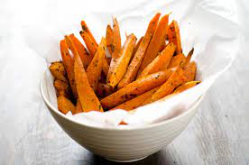

Sweet Potato Fries

Description
These addictive seasoned "fries" are actually baked, but we promise you won't miss the grease. The spice mix –
garlic powder, paprika, salt and black pepper – can be used on regular potatoes as well (you'll just need to
increase the baking time a bit).
Ingredients
- 2 pounds sweet potatoes, peeled
- 2 tablespoons olive oil
- 1 teaspoon garlic powder
- 1 teaspoon paprika
- 1 teaspoon salt
- ½ teaspoon black pepper
Instructions
- Heat the oven to 400 degrees Farenheit.
- Cut the sweet potatoes into sticks ¼ to ½ inch wide and 3 inches long, and toss them with the oil.
- Mix the spices, salt and pepper in a small bowl, and toss them with the sweet potatoes. Spread them out on 2 rimmed baking sheets.
- Bake until brown and crisp on the bottom, about 15 minutes, then flip and cook until the other side is crisp, about 10 minutes. Serve hot with dip of choice.